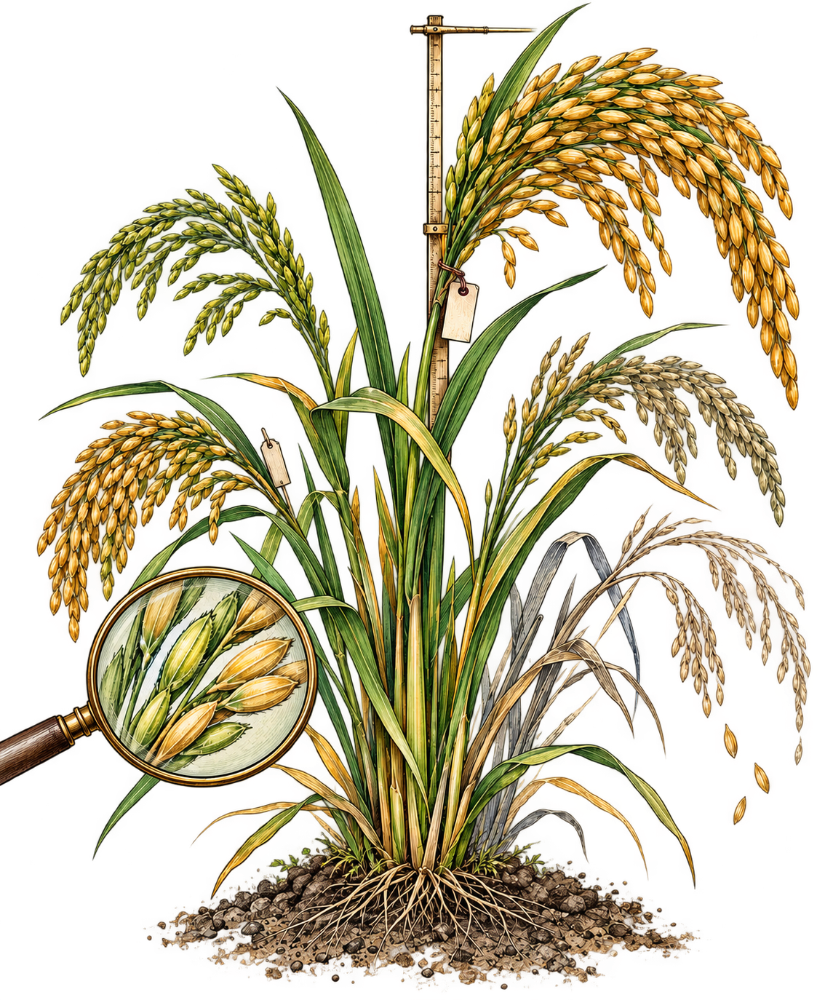

Beyond Genetic Diversity: Preserving Future Options in Breeding
“If we use, to achieve our purposes, a mechanical agency with whose operation we cannot efficiently interfere once we have started it, because the action is so fast and irrevocable that we have not the data to intervene before the action is complete, then we had better be quite sure that the purpose put into the machine is the purpose which we really desire and not merely a colorful imitation of it.” ― Norbert Wiener
在了解育种模型后，我产生了一定的思考，现在的模型都在越来越追求精准，甚至盲目地上神经网络类似“军备竞赛”，这样真的会对育种产生帮助吗？所以我产生了一个疑问：
“追求短期的精准，是否会损失育种的长期收益？”
“如果育种模型越来越准确地把资源集中到它认为最好的材料上，这一定对长期育种有利吗？”

育种是一个系统的过程，而模型只是作为其中一个预测器的组件。传统的机器学习模型在现实世界中进行采样，如果模型出现偏差，可以再次从现实中进行采样。但是育种的特殊之处在于，这是一个dual control的过程,预测模型既从现实世界中获取信息，也指导人们改造现实世界。
这就会导致一个结果：是否我们无法发现模型的错误或偏差，仅仅只是因为在模型的指导下我们把证明材料删除了？，而这种删除是否会导致模型出现不可见的偏差并逐渐累积？
为此我们设计了一些实验，以回答几个问题：
- 随着选择对当前目标变得越来越准确，未来的遗传选择空间会发生什么？
- 一个遗传选项能否仍然在遗传上存在，却系统性地从观测中消失？
- 观测范围的收窄是否先于遗传损失发生？传统多样性指标能否揭示这两个过程？
- 如果育种必须淘汰材料，能否比随机探索更高效地保留未来选择空间？
- 如果把此前被低度代表的材料重新送回表型测定，模型能否恢复之前没有学到的信息？
结果
1.对当前目标越准确的选择，会让未来可利用的遗传选项越来越少
短期遗传增益会提高，但长期可保留的未来遗传可能性会下降，而且即使使用完全知道当前真实遗传价值的“理想排序”，这种现象仍然存在。
2.遗传上仍然存在的材料，可以在观测上被系统性忽略
即使候选群体本身完全相同，不同选择策略也会让某些遗传选项更少进入表型测定和训练数据，因此“还存在”和“能被看到”并不是一回事。
3.观测范围的收窄发生在遗传选项真正丢失之前，而且传统遗传多样性指标不一定能发现这个过程
在遗传选项还几乎都存在的时候，模型导向的选择已经开始减少对某些材料的观测；随后经过多轮选择，这些遗传选项才进一步真正消失。
4.有针对性地保留当前选择中代表不足的材料，比随机保留更高效
如果必须淘汰大部分材料，那么优先保留那些在当前已选材料中缺乏代表性的基因型，可以在付出相近短期收益代价的情况下，保留更多未来遗传可能性。
5.只要遗传材料还没有真正消失，把被忽略的材料重新送回表型测定，就有可能让模型重新学到之前没有学到的信息
重新扩大观测范围后，模型对隐藏遗传效应的识别可以恢复，预测误差也会下降；但模型学会了这些信息，并不代表当前育种目标就会主动选择这些材料
模拟世界的构建
因为找不到符合条件的真实数据，所以我们用INIA水稻数据和AlphaSiMR构建了一个模拟世界，尽量干净地拆解育种机制，以找到因果关系。
为什么要构建一个模拟世界，这是一个悖论问题，即如果材料已经被淘汰，那我们怎么指导它是未来需要的材料？和如果我们都不知道未来需要什么材料，我们怎么才能知道要保留什么；如果我们知道未来要保留什么，那未来就不是未知的。
为此我们做出了如下的构建：
1.拿真实水稻材料当作起点
我们首先从 INIA 的水稻资源中选了 200 份热带粳稻材料作为最初的亲本。这 200 份材料都是真实做过基因分型的材料。也就是说，一开始每份材料身上有哪些基因型、不同材料之间有多像、多不一样，这些关系都来自真实数据
2.把这些真实材料整理成一个适合模拟遗传的“基因组地图”
水稻有 12 条染色体。我们在每条染色体上保留了 200 个有差异的遗传位点，因此一共是2400个基础遗传位点。
这些位点的作用是尽量保留真实水稻材料之间原本的遗传结构。比如有些材料在某一段染色体上彼此很像，有些差别很大，这些信息不会被完全打乱。
作者还给这 12 条染色体安排了一个总的遗传长度 15 （它规定了杂交时染色体发生重组、交换的整体尺度。有了这个设定，后代就不会只是简单“复制”父母，而是会重新组合父母的染色体片段。）
3.建立一套“实际用于分析和预测的标记”
我们在每条染色体上放了 180 个标记，一共2160个标记。主要用于后面的模型训练、距离计算、多样性计算等
4.给这个模拟世界造一个“当前育种目标”：产量
光有基因型还不够，因为育种要有一个“好坏标准”。
于是我们设置了 240 个影响产量的遗传位点，每条染色体 20 个，共240个，这些位点共同决定一个材料的基础遗传产量。
然后我们把整个模拟世界的产量尺度调到比较接近真实水稻的水平：
平均产量大约是：
遗传标准差大约是：
遗传力设成：
这里的“遗传力 0.57”可以简单理解成：观察到的产量差异中，有相当一部分来自遗传差异，但也有一部分来自环境噪声。
所以一个材料最终被“测出来”的产量，不是：基因直接决定的产量。而是：遗传部分+环境误差,这样模拟出来的世界不会过分理想化。
5.然后让这些材料开始一代一代繁殖
每一轮都有一批当前亲本。这些亲本组成100个杂交组合;每个组合产生5个后代;所以每轮产生500个候选后代。
这些后代使用的是“双单倍体”形式。让每个后代的基因型被快速固定下来，不再是很多位点上杂合的状态。
这样每个候选材料都比较像一条稳定品系，便于后续比较和选择。
6.500 个候选里只允许留下 100 个
为了体现资源的有限性，每轮有
但只有：
能被保留下来。
这 100 个会进入下一轮，成为下一代的亲本。整个过程连续进行 30 轮。
同时，下一代不是提前生成好的。我们没有先把未来 30 代所有后代都造出来，再让不同方法去挑。而是这一代留下谁直接决定了下一代能产生谁。
后代是逐代生成的，不同选择策略一旦留下了不同的亲本，后面的遗传历史就会自然分叉。这就是整个模拟世界最核心的地方。
可以把它概括成：
然后重复 30 次。
所以这个世界不是静态数据集，而是一个会被选择策略不断改写的世界。这也是为什么后面才能研究今天选谁会不会影响明天还能看到谁、还能产生谁。
7.模拟世界参数
| 参数 | 设定 |
|---|---|
| 初始可选水稻材料 | 317 份 |
| 实际选作创始材料 | 200 份 |
| 材料类型 | 热带粳稻 |
| 随机种子 | 20260925 |
| 染色体数 | 12 条 |
| 每条染色体保留的源标记 | 200 个 |
| 源标记总数 | 2400 个 |
| 用于模拟分析的标记数 | 每条 180 个，共 2160 个 |
| 数量性状位点数 | 每条染色体 20 个，共 240 个 |
| 总遗传图谱长度 | 15 摩尔根 |
| 创始群体平均产量 | 8112.48 千克/公顷 |
| 加性遗传方差 | |
| 加性遗传标准差 | 约 683.56 千克/公顷 |
| 遗传力 | 0.57 |
| 每轮杂交组合数 | 100 个 |
| 每个组合产生后代数 | 5 个 |
| 每轮候选后代总数 | 500 个 |
| 每轮保留并表型的材料 | 100 个 |
| 标准模拟轮数 | 30 轮 |
| 后代类型 | 双单倍体 |
未来遗传选项与隐藏未来目标的构建
我们已经把“育种世界”搭好了，接下来必须回答一个最关键的问题：在这个世界里，我们怎么定义“未来可能有用、但现在不知道有用”的材料？
1. 先从基因组里选出 10 个特殊位点
我们从用于分析的 2160 个标记中，选出 10 个位于不同染色体上的位点。
这些位点在创始群体中的次要等位基因频率大约在 0.24 到 0.33 之间，因此它们既不是特别常见，也不是极端稀有。
对于每个位点，如果某个材料在该位点上处于我们指定的目标纯合状态，就记为 1，否则记为 0。
2.用这10个位点构造 120 个“未来遗传选项”
我们并不提前指定未来究竟需要哪一个位点，而是从这 10 个位置中，每次取 3 个，构成一个三位点组合。 所以一共可以得到：
个不同的组合。
这 120 个组合共同组成一个“未来遗传选项库”。人为构造出一组现在不知道未来谁会有用的候选可能性，用它们作为实验探针。
3. 每个模拟情景中，随机选一个作为“真正的未来目标”
每个模拟情景中，随机选一个作为“真正的未来目标”,在每一个模拟情景中，我们从这 120 个组合里随机挑出一个，例如：
把它设定成真正会在未来变得有价值的遗传组合。同时育种模型和选择策略不知道 H 是谁。只有实验者知道，并且只在事后评估时使用这个信息。
这样就避免了一个问题，，如果选择策略提前知道 ABC 将来很重要，那它当然可以主动保护 ABC，这就不再是在研究“未知未来”。
4. 在当前环境里，让这个未来组合暂时没有价值
前 30 轮育种中，未来组合 H 并没有额外收益。我们把材料的真实遗传价值写成：
其中
也就是说，A、B、C 每一个组成部分在当前环境下反而都有一点小代价。
而前 30 轮中：
所以完整的 ABC 组合并没有任何额外优势。
因为如果 ABC 从一开始就很好，模型很可能自然会把它留下来。 所以我们故意让它，今天看起来不重要，甚至略微吃亏，但未来可能突然变重要。这才符合“未来需求发生变化”的场景。
5. 等环境改变以后，再让 H 变得有价值
在未来环境中，我们把 H 的额外效应改成：
大约相当于：
& 273″kg/ha“ &
因为 A、B、C 本身各自有大约：
的代价，所以完整 H 在新环境中的净直接收益大约是：
这样就出现了我们真正想研究的情况： 前 30 轮里，模型完全没有理由特别保护H。但是第30轮以后环境改变了，H 突然变成了一个有价值的材料。
于是我们就可以回头问：在它还没有价值的时候，我们是不是已经把它弄丢了？
6. 为什么要设计 120 个，而不是只设计一个 H？
如果实验从一开始只定义一个 H，那么别人很容易说：“你其实就是提前知道了未来，然后专门围绕这个未来设计实验。”
所以论我们先定义 120 个可能的未来选项，再随机挑一个作为真正未来需要的 H。
这意味着育种策略面对的是120个可能性。但它不知道未来到底是哪一个。
所以这 120 个组合真正承担的是一种“反事实探针”的作用，而不是对未来进行预测。
预测模型与闭环育种过程
模拟世界构建完成后，下一步就是让一个预测模型真正参与育种过程。
模型并不是在一个固定的数据集上训练一次，然后结束。相反，它会不断根据自己过去参与选择得到的数据重新训练，并继续影响下一轮的选择。
因此，模型和育种群体之间形成了一个闭环：
与此同时，被选择的材料还会成为下一轮的亲本，因此还有另一条闭环：
也就是说，模型同时在影响两件事情：
下一轮模型能够学习到什么；
下一轮群体中还能出现什么。
1. 构建预测模型
我们使用岭回归作为基础预测模型。
模型中包含三部分信息：
- 一个截距项；
- 300 个标记位点的主效应；
- 前面定义的 120 个三位点组合效应。
因此可以把模型简单写成：
其中：
- 表示第 个标记位点的基因型；
- 表示这个位点对应的效应；
- 表示第 个三位点组合是否存在；
- 表示这个组合对应的效应。
这里的 300 个标记中，包含了前面构造未来遗传选项时使用的 10 个特殊位点。
也就是说，模型在结构上是“有能力”学习这些未来组合的。如果模型最后没有学到某个组合，并不是因为模型中根本没有这个变量，而可能只是因为相关材料没有进入训练数据。
2. 对不同类型的效应进行不同程度的惩罚
岭回归的参数估计可以写成：
其中 用来限制模型参数变得过大。
在这里：
也就是说，普通标记主效应和三位点组合效应使用了不同程度的正则化。所有标记的基因型数值都使用最初 200 个创始材料的均值和标准差进行标准化，而且这个标准化尺度在后面的 30 轮育种过程中保持不变。
3. 最初的训练数据
模型最开始并不是完全没有数据。初始训练集由 200 个创始材料组成。
对于这 200 个材料，我们已经在模拟世界中生成了它们的观测产量，因此最开始的训练数据可以写成：
模型首先利用这 200 个材料进行第一次训练。然后才进入正式的循环育种。
4. 每一轮先产生 500 个候选材料
在第 轮育种中，当前亲本首先产生：
每个杂交组合产生：
因此一共产生：
个候选材料。
注意，在这一时刻，这 500 个候选材料的基因型是已知的，但是它们真正的表型还没有暴露给模型。因此模型必须在“还没有看到这些材料真实表现”的情况下进行预测。
5. 模型对 500 个候选材料进行排序
模型根据当前训练数据，对每一个候选材料计算预测值：
然后按照预测值对 500 个材料进行排序。
可以理解成：
接下来，具体的选择策略会从这 500 个材料中选择 100 个。不同实验中，这 100 个材料的选择方式可能不同。例如，最简单的模型导向策略就是直接选择模型预测值最高的 100 个材料。
6. 只有被选择的 100 个材料会进入表型测定
这是整个闭环中非常关键的一步。
虽然这一轮产生了 500 个候选材料，但是育种资源有限，因此只有被选中的 100 个材料会进行表型测定。
也就是说：
剩余的 400 个材料即使在模拟世界中存在真实遗传价值，模型也不会获得它们的表型信息。
因此，对于模型来说：
这意味着模型并不能在下一轮知道“刚才没有选择的 400 个材料中，有没有某些材料其实被我低估了？”因为这些材料根本没有产生新的训练标签。
7. 被选择的 100 个材料同时承担两个角色
这 100 个被选择的材料会同时发生两件事情。
第一，它们会被表型测定，并加入训练集：
因此下一轮模型会使用更多的数据重新训练。
第二，它们还会成为下一轮的亲本。
也就是说：
所以同一个选择动作，同时改变未来训练数据和未来遗传群体，，这就是整个实验中所谓的“闭环”。
8. 为什么这个闭环非常重要
在普通的机器学习问题中，如果模型把某一类样本预测错了，我们之后仍然可能重新收集这一类样本，从而发现模型存在偏差。
但是在这里情况不同。假设一个材料被模型低估：
模型因此无法得到证明自己判断错误的新证据。如果这种情况持续发生，而且这个材料同时没有成为亲本，那么还会进一步发生：
因此，一个最开始只是“没有被模型看到”的问题，经过多轮选择以后，有可能逐渐变成“这种遗传材料已经不存在”的问题。
这也是我们后面要重点区分的两个过程，即观测上的消失和遗传上的消失。
9. 经过 30 轮以后模型实际上看到了多少数据
最初训练集有：
之后每轮增加：
一共进行 30 轮，因此最终训练数据量是：
也就是说，经过 30 轮以后，模型拥有 3200 个表型记录。
因为这些数据并不是随机从整个育种群体中产生的，而是受到模型自身过去选择的影响。因此即使训练数据越来越多，也不意味着模型看到的世界越来越完整。
它完全可能出现训练数据越来越多,但同时数据覆盖的遗传空间越来越窄。这正是我们需要研究的核心问题。
如何衡量“还剩多少未来可能性”和“这些可能性有没有被看到”
前面我们已经构建好了一个会随着选择不断变化的育种世界。
但接下来还有一个问题：我们怎么知道，一个育种群体的“未来可能性”到底有没有缩小？
仅仅计算遗传多样性是不够的。因为“群体中还有很多遗传差异”和“未来需要的某种遗传组合还能不能产生”，其实是两个不同的问题。
例如，一个群体整体上仍然具有很高的遗传多样性，但是通向某个特殊遗传组合的唯一一条路径可能已经消失。反过来，一个遗传组合也可能仍然存在于候选群体中，但是因为选择策略一直不选择它，它始终无法进入表型测定和训练数据。
因此，我们需要分别回答两个问题：
- 它还存在吗？
- 如果它还存在，它有没有被看到？
为此，我们定义了两个指标：
- 育种可选性指数（BOI）：衡量还有多少未来遗传选项能够被产生；
- 条件观测指数（COI）：衡量这些仍然存在的遗传选项有没有被系统性地忽略。
1. 先把“产生”和“观察”分开
假设当前群体中仍然可以产生某个未来遗传组合 。
这只能说明：
但这并不意味着模型一定能够看到它。因为每一轮虽然有 500 个候选材料，却只有 100 个会进入表型测定。
因此可能出现：
所以我们需要把两个状态分开：
这也是为什么后面不能只用一个指标来描述整个过程。
2. 为了测量，而额外产生“影子后代”
如果直接使用正常育种过程中产生的 500 个候选材料来计算这些指标，会遇到一个问题：一旦我们为了测量而改变了选择，就会反过来改变后面的育种过程。
因此，在每一个需要测量的时间点，我们先把当前的亲本和模型“冻结”。然后从这个完全相同的状态出发，额外产生 3 批候选材料。
每一批都有：
所以一共观察：
对于每一批候选材料，当前的选择策略仍然会选择其中 100 个。
但是这些额外产生的材料只用于测量：它们不会加入训练集，也不会成为下一轮亲本。因此，它们不会改变真正的育种轨迹。
可以把它理解成：
这样我们就能够在完全相同的育种状态下，测量“这个群体还能产生什么”以及“选择策略愿意看到什么”。
3. 第一个指标：还有多少未来遗传选项能够产生
前面我们一共定义了 120 个未来遗传选项。对于其中第 个选项，我们统计它在三批候选材料中一共出现了多少次。
记为：
其中 表示第 批 500 个候选材料中，第 个遗传选项出现了多少次。
我们规定：如果一个遗传选项在 1500 个影子后代中至少出现 3 次，就认为当前群体仍然具有产生这个选项的能力。
也就是说：
其中 表示所有“仍然可以产生”的未来遗传选项。
于是，育种可选性指数定义为：
也就是：
因此，它非常容易理解。如果：
意味着 120 个未来遗传选项几乎全部仍然可以产生。
如果：
意味着只剩下一半的未来遗传选项还能产生。
如果：
则意味着这个育种群体能够到达的未来遗传空间已经非常狭窄。
所以这个指标回答的是：现在这个群体，还能去哪些地方？
4. 但是“还能产生”并不等于“能够被模型看到”
接下来再看第二个问题。
假设某个遗传选项在 1500 个候选材料中出现了很多次。理论上，它完全有机会进入表型测定。但是如果选择策略认为这些材料表现不好，它们可能一次又一次被排除在被选择的 100 个材料之外。
因此我们还需要统计：
其中 表示第 批候选材料中，真正被选择进入表型测定的材料里，有多少携带第 个遗传选项。
如果：
我们就认为这个遗传选项得到了足够的观测机会。于是可以计算：
也就是：在所有仍然可以产生的遗传选项中，实际有多少比例真正进入了观测。
但是仅仅知道这个比例还不够。
5. 为什么还需要一个“随机选择”的参照
假设某个遗传选项本来就在候选群体中非常少见。那么它没有进入 100 个被表型的材料，可能并不是模型故意忽略了它，只是因为它本来出现得就少。所以我们不能简单地说：“没有被观察到 = 被模型忽略。”
我们需要问一个更加公平的问题：如果面对完全相同的 500 个候选材料，我不是按照模型选择，而是随机选择 100 个，那么这个遗传选项有多大概率会被看到？
因此，对于每一个未来遗传选项，我们都根据它在这批候选材料中的实际数量，计算随机抽取 100 个材料时，它被观察到的概率。这里使用的是超几何分布。
对于第 批候选材料：
其中：
- ：这一批总共有 500 个候选材料；
- ：其中有多少材料携带第 个遗传选项；
- ：我们只能选择 100 个进行表型测定。
这样就可以计算：如果随机选择，在完全相同的候选群体中，我们本来应该观察到多少未来遗传选项。
把这个随机情况下的期望观测比例记为：
6. 第二个指标：条件观测指数
现在我们就有了两个量：
以及：
于是定义条件观测指数：
这个指标的解释非常直接。
如果：
说明当前选择策略观察这些遗传选项的程度，与随机选择基本相同。
如果：
说明这些遗传选项虽然仍然存在，但是进入表型测定的机会比随机选择还要低。
也就是说：
它们正在被系统性地忽略。
如果：
说明当前选择策略反而更倾向于观察这些遗传选项。
所以这个指标回答的是：那些还存在的未来可能性，我们真的看见了吗？
7. 为什么 BOI 和 COI 必须一起看
这两个指标描述的是完全不同的事情。可以简单理解成：
因此可能出现四种情况：
| COI 接近 0 | COI 明显小于 0 | |
| BOI 高 | 未来选项仍然存在，而且能够正常被观察 | 未来选项仍然存在，但是被系统性忽略 |
| BOI 低 | 只剩少量未来选项，但剩下的还能被观察 | 未来选项已经很少，而且剩下的也很难被看到 |
其中最值得注意的是第二种情况：BOI 很高，但是 COI 已经很低。
这意味着遗传材料其实还没有真正消失，但是模型获取信息的范围已经开始收窄。也就是说：
这正是后面实验要重点检验的现象。
8. 为什么阈值设成 3
这里 BOI 和 COI 后面的下标 3，表示我们使用的最低携带数量是 3。
也就是说：
才把一个遗传选项认为是“仍然可以产生”。
同样：
才认为它得到了足够的观测机会。
这里的 3 只是一个用于稳定测量的最低数量阈值。
它：
- 不是第 3 代；
- 也不是说只需要 3 个表型就能够准确估计一个遗传效应。
它只是为了避免某个遗传选项偶然只出现 1 次，就被认为是一个稳定存在的未来选项。
9. 一个需要特别注意的问题
条件观测指数只针对：当前仍然能够产生的遗传选项进行计算。因此，如果经过很多轮选择以后，大量遗传选项已经彻底消失，那么条件观测指数本身有可能重新接近 0。这并不意味着情况重新变好了。 可能只是因为：
所以：COI 不能单独解释，必须和 BOI 一起看。
BOI 告诉我们：还有多少东西可以看。
COI 告诉我们：这些还存在的东西，我们有没有真的去看。
只有把两者放在一起，我们才能区分：
和
这也为后面的五组实验提供了最核心的测量工具。